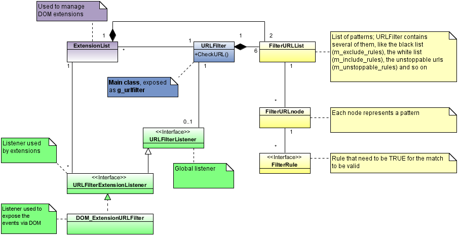
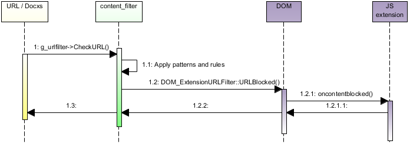

Content Filter
The content_filter module
The Content Filter module has been developed to allow the user to block unwanted pages, typically advertisements or images. The module doesn't only block the visualization of the page, but also the download itself, because the module is called before loading any URL, so it can help the user to save bandwidth.
The main classes and methods are shown in the diagram below:

Usually for using this module is enough to create a URLFilter object, call InitL() with the file name that contains the patterns and then call CheckURL() for each URL that must be checked against the patterns.
To allow external developers to extend the functionality, Content Filter has been exposed as a DOM extension, via the "URL Filter API", publicly documented
To support the extensions, rules have been introduced. A rule is a class that is asked to validate a match, to allow more sophisticate patterns (for example, a site could be blocked only when it is included in another one, but not when called directly).
The support for listeners has also been improved to support DOM extensions, with the result that:
- only the background task can add and remove rules
- the background task and the web pages cannot listen to any events
- only the injected scripts can listen to the events
- as a consequence, each page can potentially listen to the same event (so being registered as a listener)
- the DOM_ExtensionURLFilter needs to filter the events to only notify the affected page
The following diagram show a simplified example of how an extension is notified that a URL has been blocked:

The logic used to match a URL with the patterns has also changed to accommonate the needs of the extensions. In particular, if a single extension blocks a URL (and the same extension does not white list it), then the URL is rejected.
The new logic is shown here:

Rules support for extensions
Extensions required much more flexibility that previously possible with content_filter. The details are explained in the Rules Tutorial
New wildcards
We introduced two new wildcards:
-
"^": matches a separator. A separator is anything that is not:
- a number
- a letter
- the character '_',
- the character '-',
- the character '.',
- the character '%'
-
"||" Matches any scheme. For example:
-
||example.com/banner.gif matches:
- http://example.com/banner.gif
- https://example.com/banner.gif
- http://www.example.com/banner.gif
- http://subdomain.example.com/banner.gif
-
||example.com/banner.gif
doesn't match:
- http://badexample.com/banner.gif
- http://gooddomain.example/analyze?http://example.com/banner.gif